About Me:
My name is Haley Lane. I am a sculptor and student located in Overland Park, Kansas. I am currently participating in the LaunchCode program while I also run my online store selling my artwork.
My Art:
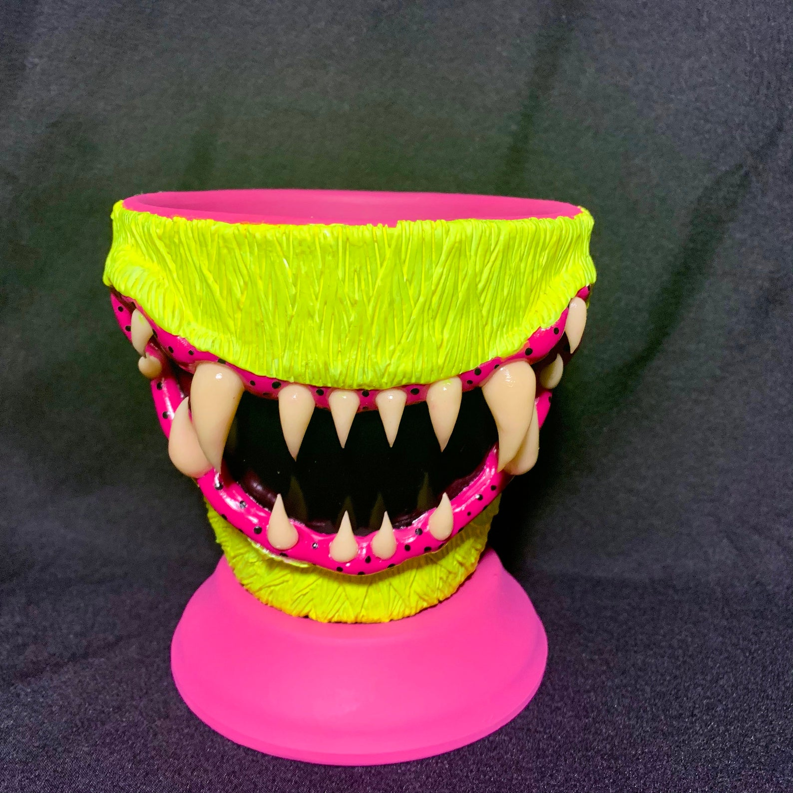
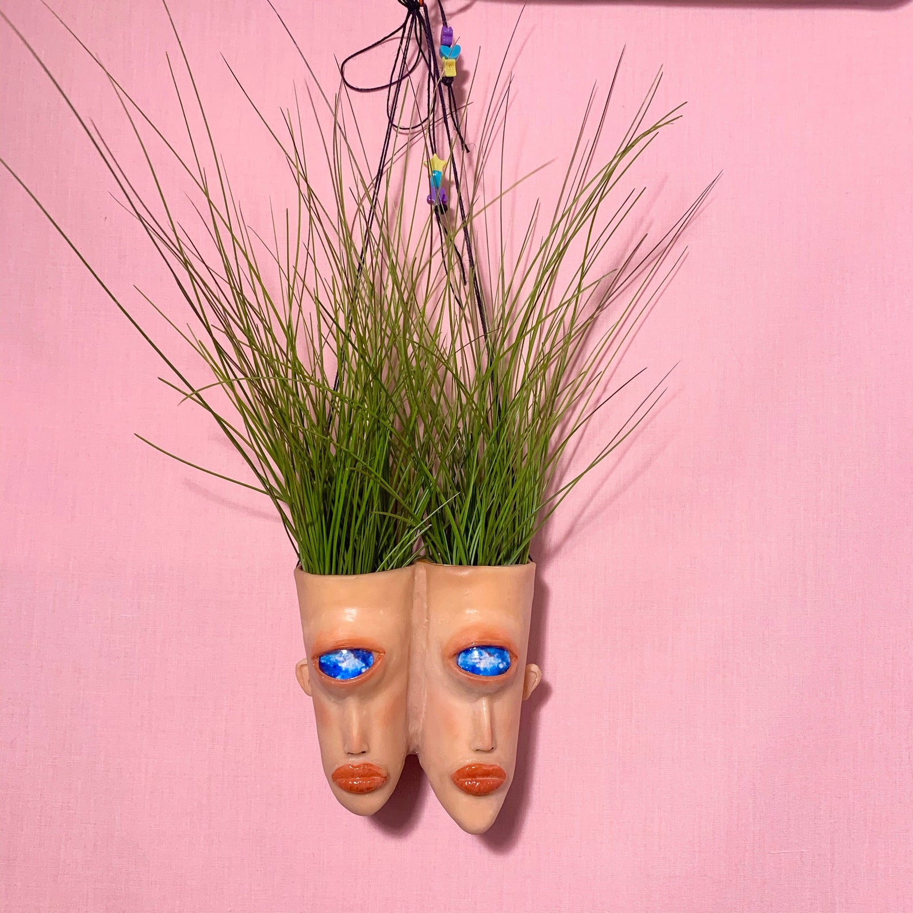
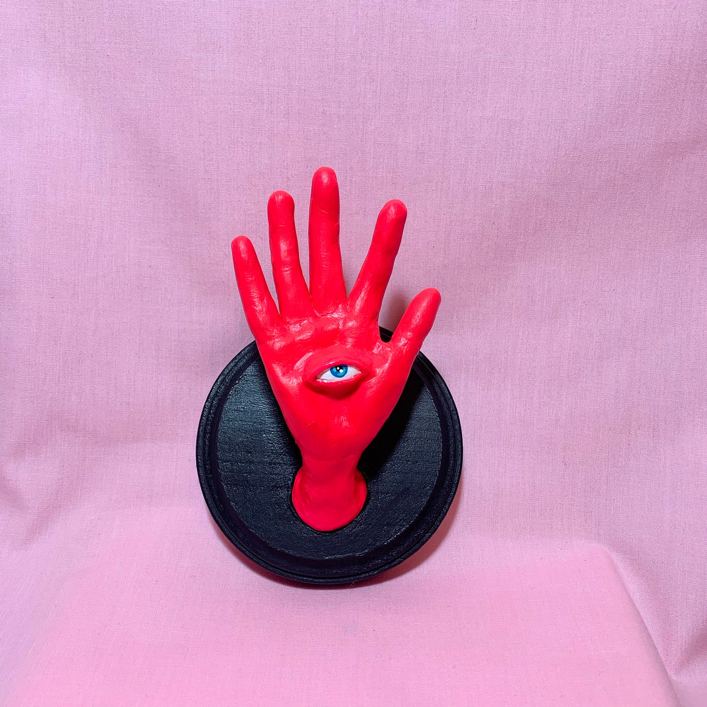
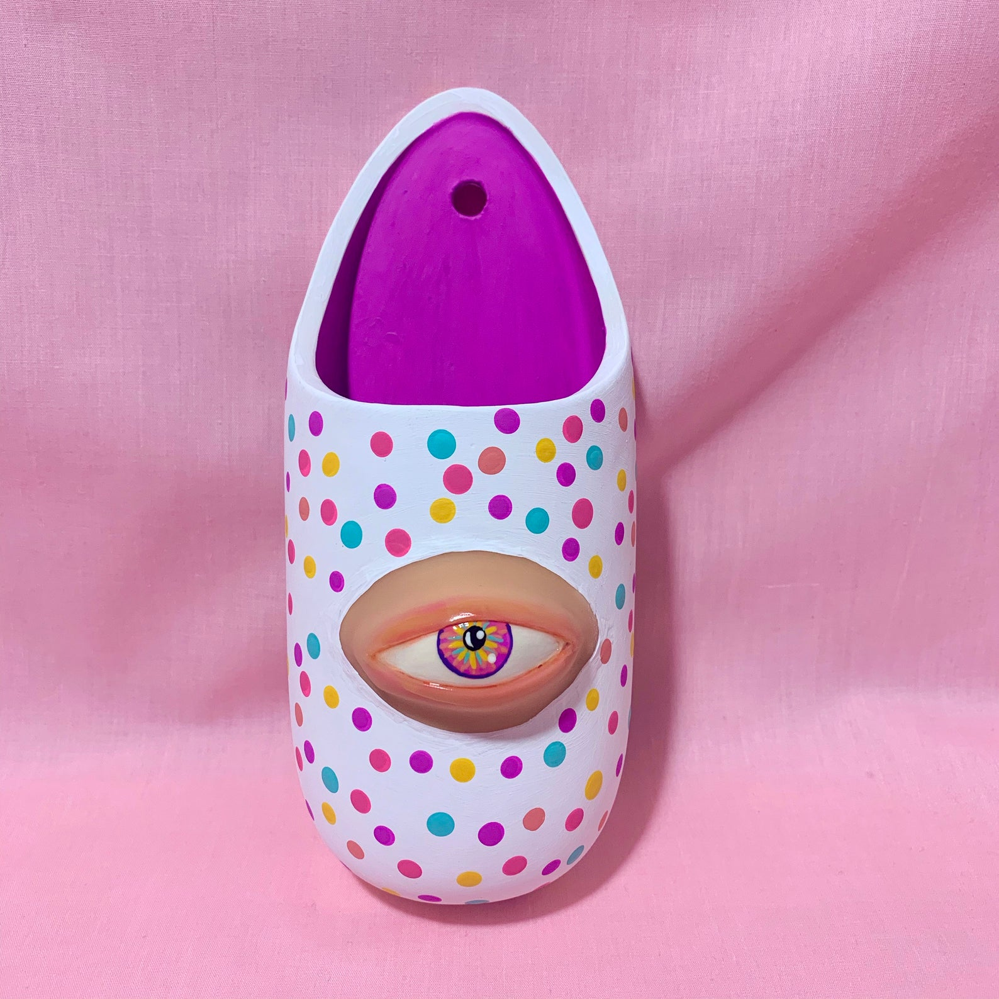
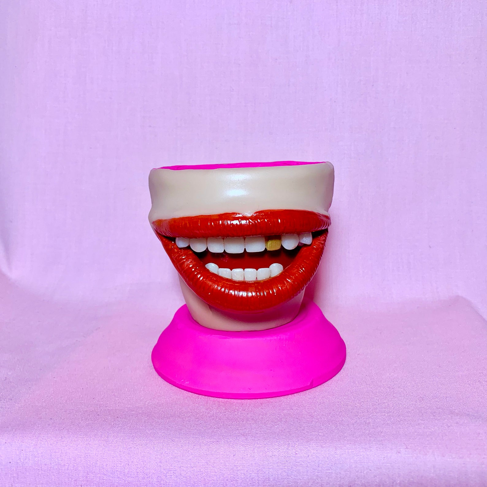
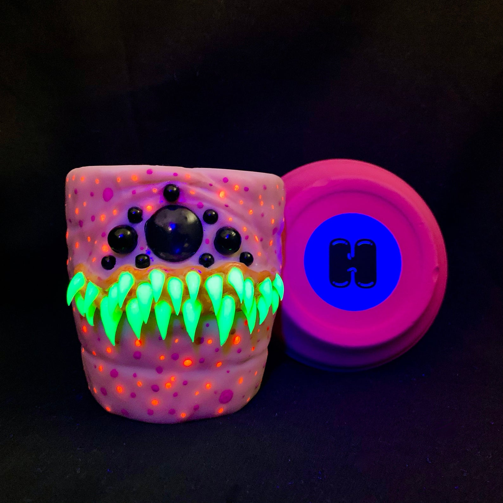
To view more of my creations, click here
My Goals:
- Graduate LC101
- Begin my coding career
- Adopt 2 cats... or more
- Grow my following for my artwork
Cats I Love:
Oriental Shorthair Cats
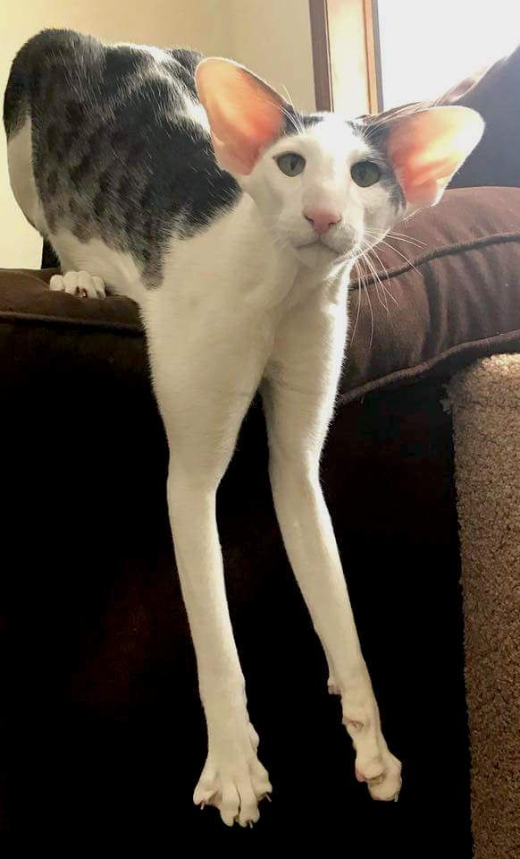
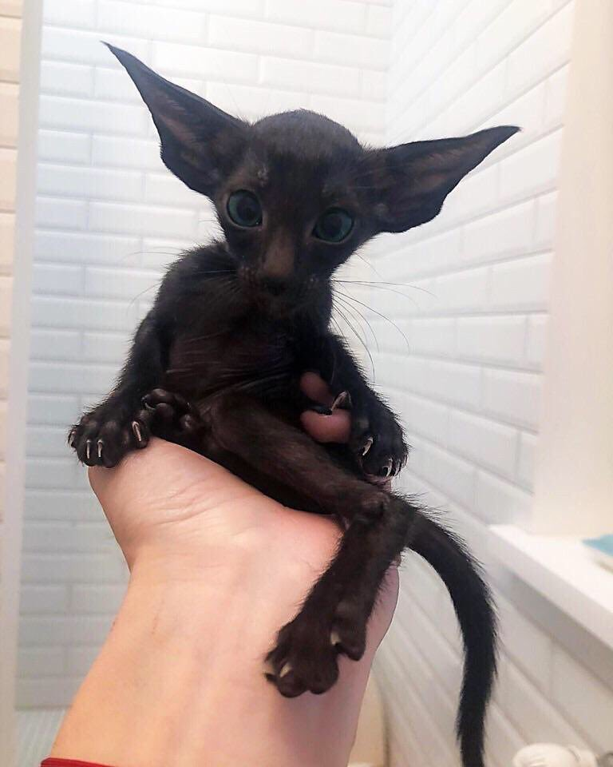
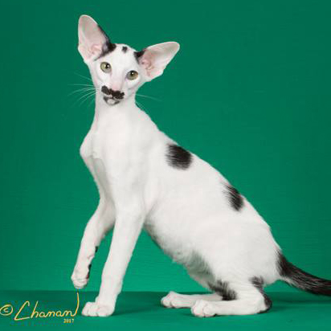
"The Oriental is a sleek, elegant cat with large, flaring ears and almond-shaped eyes. A playful, spirited breed, the Oriental has a vivacious personality. This people-oriented feline usually forms a close bond with one person. Those who give an Oriental the affection she needs will find she does anything to please them. This is a healthy breed that can live for 15 years or longer."
source
Sphynx Cats
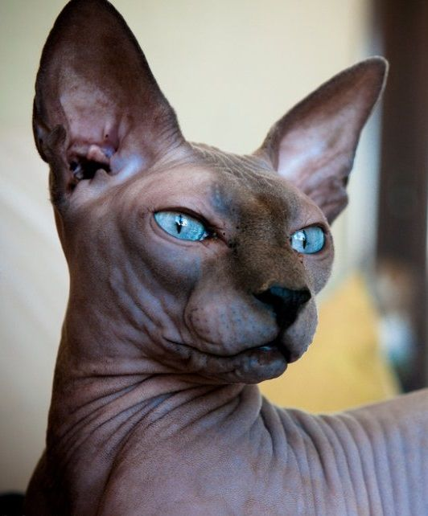
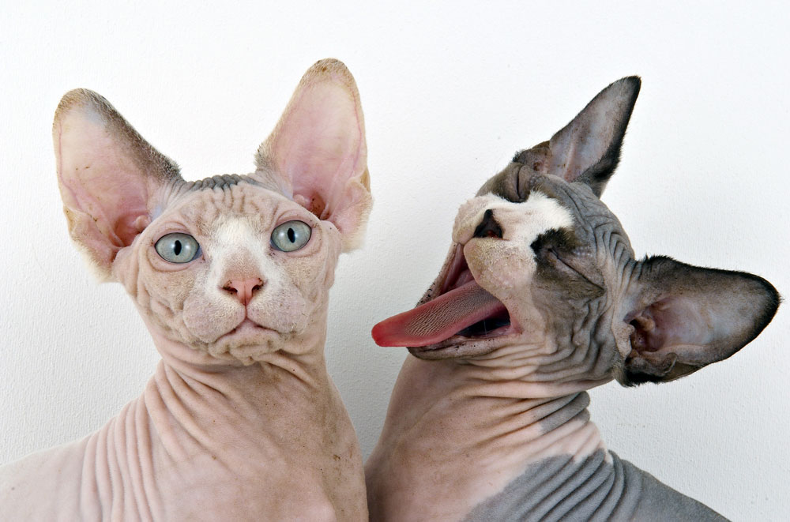
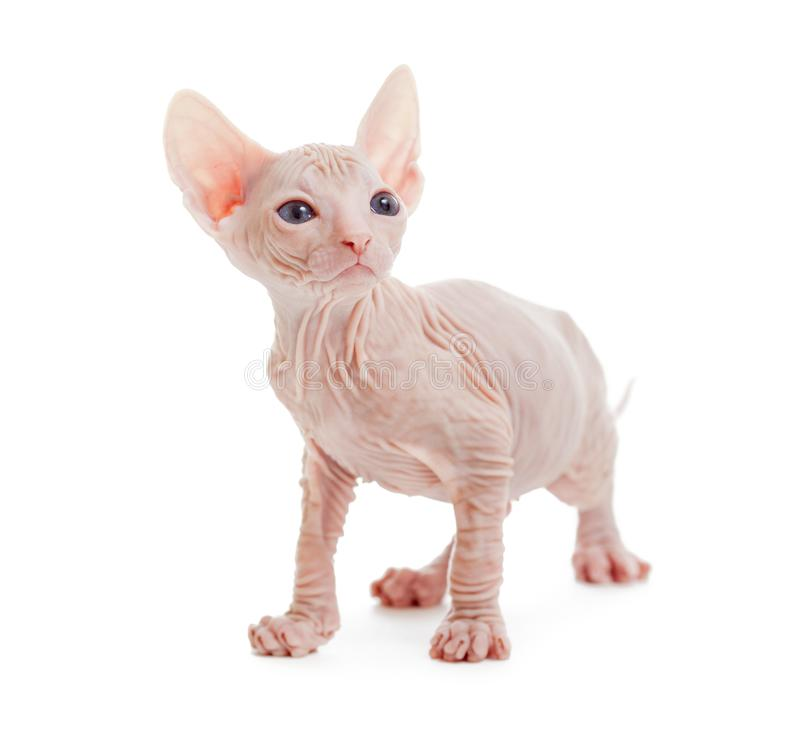
"The hairless Sphynx is muscular with broad ears and a wide-eyed, friendly expression. This sweet-natured, lively cat is inquisitive and loves being the center of attention. A devoted, affectionate feline, the Sphynx follows her human companions everywhere, purring with delight. This breed does not do well when left alone all day. The Sphynx is a healthy, hardy cat."
source
I ♥ cats
Though I love these cat breeds specifically, I'd be happy to adopt cats of any kind.